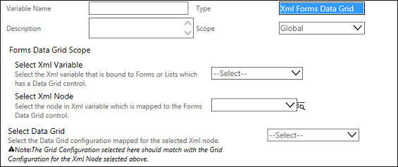

No
Xml Forms Data Grid variable is used to read or modify the selected values of a Data Grid control used in AVEVA Work Tasks Forms or Lists.
XML Variable of type 'XML Forms Data Grid'
When the variable type is selected as XML Forms Data Grid, following properties are displayed as seen in the image given below:

Property Description:
'XML Forms Data Grid' XML Variable Property |
Description |
Select Xml Variable |
Xml variables of type Xml Document and Xml list are listed here. Select the parent Xml Variable that is mapped to Forms or Lists which have a Data Grid control. |
Select Xml Node |
Only nodes of the parent variable selected above are displayed here. Select the Xml Node which is mapped to the Forms Data Grid control. |
Select Data Grid |
Lists the Grid Configurations created. Select the Data Grid Configuration mapped for the selected Xml node. The Grid Configuration selected here should match with the Grid Configuration for the Xml node selected above. |
See Creating XML Variable of Type 'XML Forms Data Grid' for more information.